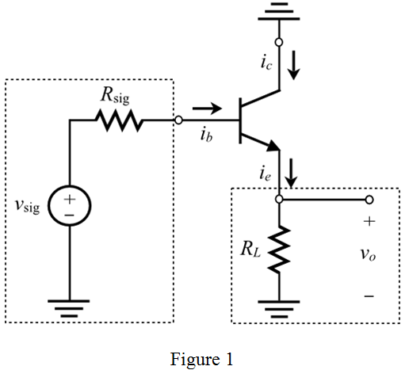
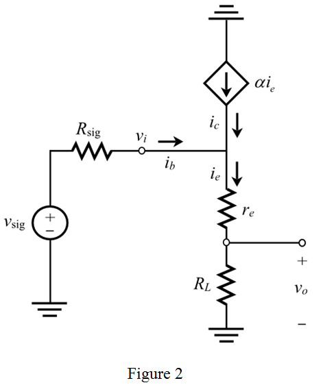
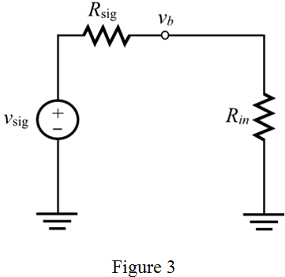
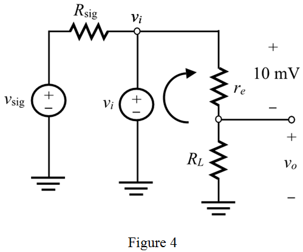

Step 1:
(a)
Consider that an emitter follower circuit is connected between the input and output ports. The input port has a source with series resistance,  and the output port has a load resistance,
and the output port has a load resistance,  .
.
The graphical representation of the common-collector or emitter follower is,

Step 2:
Replace the bipolar junction transistor with its T-model.

Step 3:
The base current in terms of collector current is,
The emitter current in terms of collector current is,
Here,
The base current in terms of emitter current is,
Step 4:
Calculate the transconductance,

.
Substitute 1 mA for  , and 25 mV for
, and 25 mV for  .
.
Calculate the small-signal emitter resistance.
Substitute 100 for  and 40 mA/V for
and 40 mA/V for  .
.
Step 5:
Apply the Ohm’s law to the circuit.
Substitute for .
Substitute 100 for  ,
,  for
for  , and
, and  for to calculate the input resistance.
for to calculate the input resistance.
Therefore, the input resistance,  is .
is .
Step 6:
Draw the circuit for determining the base voltage.

Step 7:
Apply voltage division rule to the circuit.
Substitute for and  for .
for .
Therefore, the values of  is, .
is, .
Step 8:
The voltage across the load resistor in the circuit of Figure 2 is,
The voltage across the input resistor in the circuit of Figure 3 is,

The overall voltage gain is,

Substitute  for
for  , for
, for  , for , and
, for , and  for
for  .
.
Therefore, the value of is, .
Step 9:
(b)
The equivalent circuit of amplifier is,

Step 10:
Calculate the output voltage,  .
.
Apply Kirchhoff’s voltage law to the circuit.
The voltage across the input resistance in the circuit of Figure 3 is,

Therefore, the values of and are, and respectively.
Step 11:
(c)
The output resistance in the circuit of Figure 2 is,
Therefore, the value of output resistance is, .
Step 12:
Open circuit voltage of the emitter follower is unity which means that voltage at the emitter follows the base voltage. Therefore, the value of is unity.
The overall voltage gain is,
If the load resistor,  reduces to
reduces to  , calculate the value of .
, calculate the value of .
Therefore, the value of  is, .
is, .